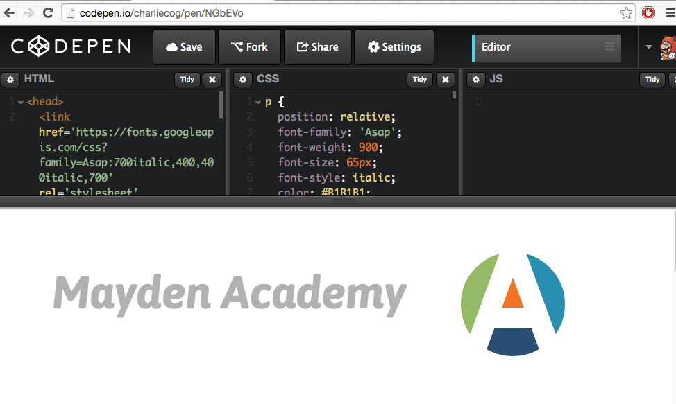

CREATING THE MAYDEN ACADEMY LOGO WITH PURE CSS
SEP 29, 2015
We have been set a task for this sprint. It was to create the Mayden Academy logo using only CSS and no image tags. On my way home I had a bit of a wait at the station so starting doodling an idea I had to solve this in a notepad. It ended up escalating and consuming my evening, however I am satisfied with the result! My method involved creating a series of rectangular Divs, to which I assigned all the necessary colours and aligned them in such a way that when overlaid with a circular div with a thick white border it mimics a circular viewport onto the coloured divs below. I made use of position: relative - so that I could position the divs manually, float: left - to get the divs to stack up nicely, z-index to set the foreground and background elements and transform: rotate(20deg) - to rotate the rectangular divs.
I have taken a few screenshots that show my finished project, however I have manipulated developer tools so that you can observe the various stages of construction.
Heres the bottom layer
Heres the white divs sitting on top to make the A shape
And here is the finished logo
